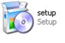
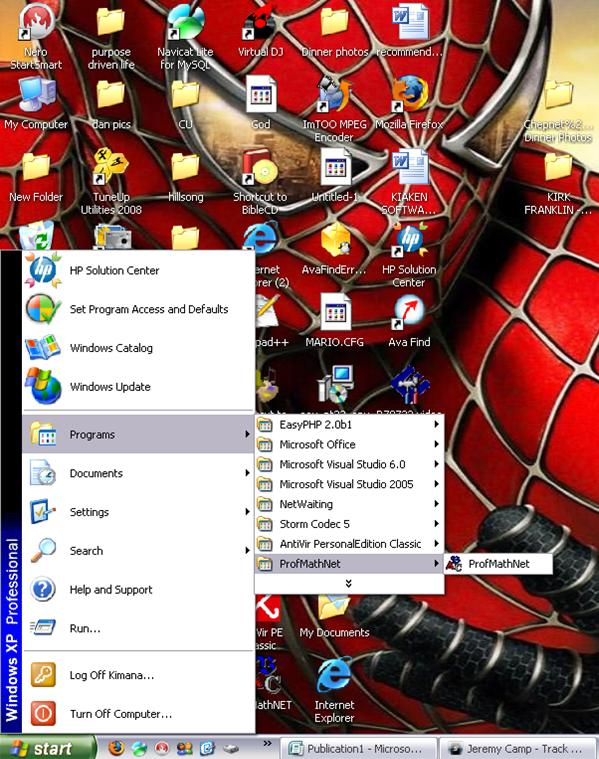

Thank you for downloading this freeware. Please read this manual before installing this software
Before ProfMath installation, install the Microsoft .Net Framework 3.5, downloaded freely from the internet (version 3.5 or above).
ProfMath is a unique mathematical program designed to aid students in classes 1 to 6. Through the numerous exercises that the program offers, it ensures that the student’s performance in mathematical computations is improved hence improving in general his/her mathematical abilities.
It is highly recommended that the parent, teacher or guardian carefully monitor the child as they are doing the exercises and guide them where need be (Please show the child the correct mathematical formulas to use in order to get the results needed.)
- Pentium IV, Pentium III
- Windows Operating System
- Microsoft .Net Framework 3.5 and above (downloaded free from Microsoft Website)
- Recommended Screen resolution 1024*768
program set-up is fairly simple.Click on the set-up icon

and follow the prompts.
Once the program is installed it will appear in the program lists in the start up menu. Click on the program icon and it is up and running. An example is demonstrated below.

To properly uninstall, click on the same install program used to install this program, or go to the control panel and search for ProfMath and click remove. Follow the prompts.
Some files may need manual deletion therefore follow the installation path ProfMath was installed to and delete manually.
Next >>